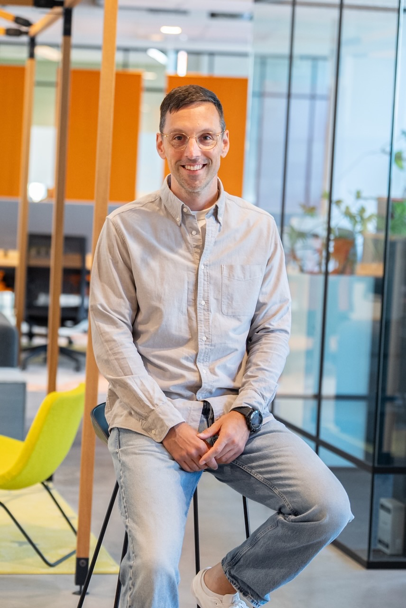

Je team gebruikt al AI. Alleen weet niemand hoe.
Onofficiële accounts, klantdata in gratis tools, geen beleid en geen meetbaar resultaat. Ik help bedrijven, onderwijs en overheid om AI verantwoord én productief in te zetten. Met privacy als uitgangspunt, niet als voetnoot.

Waarom AI in de meeste organisaties nog niets oplevert
Niet omdat de tools tekortschieten, maar omdat niemand het gesprek heeft gevoerd over hoe, waarmee en met welke data.
Schaduw-AI
Medewerkers hebben zelf een gratis account aangemaakt. Wat daarin verdwijnt aan klantgegevens, contracten en interne stukken, weet niemand.
Geen beleid
Er zijn geen afspraken over welke tools mogen, waarvoor, en wat er nooit in mag. Iedereen bepaalt het zelf, meestal uit onwetendheid.
Wisselend niveau
De één automatiseert halve werkdagen, de ander typt nog vragen van drie woorden. Kennis blijft hangen bij een paar enthousiastelingen.
Niet meetbaar
Er wordt veel geëxperimenteerd, maar niemand kan zeggen wat het oplevert. Zonder doel geen resultaat, zonder resultaat geen draagvlak.
Van losse experimenten naar een team dat AI beheerst
Vier manieren om je organisatie verder te helpen. Los in te zetten, sterker in combinatie. Tarieven op aanvraag.
AI-training in-company
Een dag of traject voor je hele team, met jullie eigen werk als oefenmateriaal. Prompten, verifiëren, datahygiëne en werkafspraken. Ideaal 8 tot 15 deelnemers, op locatie in heel Nederland.
Vraag een voorstel aanAI-workshops
Eén dagdeel, één thema, direct toepasbaar. Beter prompten, privacy en datahygiëne, use-cases vinden, werkafspraken maken of AI voor management. 6 tot 20 deelnemers.
Vraag een voorstel aanKeynotes en lezingen
Een nuchter verhaal over kansen én schaduwkanten van AI. Voor congressen, teamdagen en managementbijeenkomsten. 30 tot 60 minuten, desgewenst met interactief deel.
Vraag beschikbaarheid aanToolimplementatie en AI-beleid
Inzicht in welke AI-tools je organisatie echt gebruikt, een onderbouwde keuze en werkafspraken die in de praktijk werken. In samenwerking met partner BeeSensible.
Bespreek de mogelijkhedenOrganisaties waar zorgvuldigheid geen optie is, maar een plicht
Bedrijven
Van mkb tot corporate. Voor teams die sneller willen werken zonder klantdata, contracten of concurrentiegevoelige informatie op straat te leggen. Met een businesscase die je kunt aantonen.
Onderwijs
Voor scholen, mbo, hbo en universiteiten. Docenten die AI willen begrijpen en verantwoord willen inzetten, in de klas en daarbuiten, met leerlinggegevens goed beschermd.
Overheid
Voor gemeenten, provincies en uitvoeringsorganisaties. AI inzetten binnen de AVG, de AI Act en de eigen zorgplicht naar burgers. Uitlegbaar en aantoonbaar.
Geen hype, geen doemscenario. Gewoon leren wat werkt.
Elke training begint bij jullie praktijk en eindigt met iets wat morgen gebruikt wordt. Drie stappen, in elk traject.
Verkennen
Een korte intake: welke tools worden er al gebruikt, met welke data, en waar wil de organisatie naartoe? Zo sluit de training aan op wat er echt speelt.
Trainen
Hands-on, met eigen werk als oefenmateriaal. Prompten, controleren, datahygiëne en de grenzen van wat je een tool toevertrouwt. Alles in één keer op niveau.
Toepassen
Deelnemers gaan naar huis met concrete toepassingen en heldere werkafspraken. Desgewenst een vervolgsessie om resultaten te meten en bij te sturen.

Rasoptimist over AI. Met open ogen voor de schaduwkant.
Ik geloof dat AI werk leuker, sneller en beter kan maken. Maar ik zie ook dat mensen uit onwetendheid alles in een chatbot stoppen, zonder idee wat er met hun data gebeurt. En dat we als Europa opvallend afhankelijk zijn geworden van Amerikaanse en Chinese modellen.
Daarom train ik niet alleen op vaardigheden, maar ook op bewustzijn. Zodat je team AI gebruikt met verstand en met grip op de eigen data. Nuchter, praktisch en zonder jargon.
Volg me op LinkedInBenieuwd waar jouw organisatie staat?
In een gesprek van dertig minuten kijken we wat er al gebeurt met AI in je organisatie, waar de risico's zitten en welke stap logisch is. Vrijblijvend en zonder verkooppraatje.
- E-mailinfo@matthijsvanmeurs.nl
- Telefoon+31 6 41 01 10 64
- LinkedInlinkedin.com/in/matthijsvanmeurs
- AdresKeurenplein 41 - UNIT A3170
1069 CD Amsterdam
Plan meteen een kennismaking
Dertig minuten, online of bij jullie op locatie. We bespreken waar je organisatie staat met AI, waar de risico’s zitten en welke stap logisch is. Vrijblijvend en zonder verkooppraatje.
- Geen voorbereiding nodig.
- Je krijgt daarna een voorstel op maat.
- Tarieven op aanvraag, altijd vooraf helder.